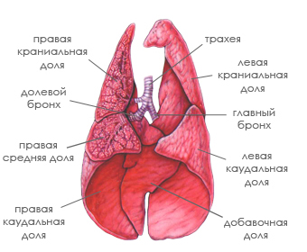

Дыхание и кровообращение
Органы системы дыхания кошки устроены таким образом, что могут хорошо функционировать в различных условиях окружающей среды. Задачей этих органов является обеспечение газообмена и доставка в ткани организма кислорода. Также они служат в некоторой степени и органами выделения, так как через них удаляется из организма излишек влаги и вредные газы, и участвуют в теплообмене, потому что удаляют излишек тепла из тканей.
Дыхательная система кошки состоит из носа, носоглотки, гортани, трахеи, бронхов и легких. Легкие кошек — основной орган их системы дыхания. Это парный орган, состоящий из 2 долей (правой и левой), которые занимают большую часть грудной клетки, как у всех теплокровных животных. Они состоят из альвеол — легочных пузырьков, плотно оплетенных сеткой капилляров, которые служат проводниками при осуществлении газообмена. Дыхательные органы покрывает слизистая оболочка, выполняющая функцию их защиты.
В процессе дыхания через нос воздух поступает в гортань, оттуда — в бронхи и легкие. С этим связано нормальное функционирование системы кровообращения. Также дыхание способствует нормализации теплообмена и выведению лишней жидкости из организма.
Особых отличий от систем кровообращения большинства млекопитающих у кошек нет. Пульс у кошки можно измерить нажатием на бедренную артерию, находящуюся на внутренней стороне бедра. В нормальном состоянии пульс кошки насчитывает 100-150 ударов в минуту. А у котят пульс, как и температура, и частота дыхания, значительно больше, чем у взрослых животных.
По мере того, как сердце проталкивает кровь через артерии, их эластичные стенки активно сокращаются и расслабляются. Это и называется пульсом. У вен более тонкие стенки, чем у артерий, поэтому они в большей степени подвержены повреждениям. В венах пульс отсутствует, но кровь по ним движется строго в одном направлении - к сердцу, - за счет находящихся в венах клапанов.
Различным частям тела нужно разное количество крови. Так, например, на долю мозга приходится лишь небольшая часть веса тела, однако ему требуется 15-20% всей содержащейся в теле крови. Мышцы в состоянии покоя потребляют около 40% крови, а во время физической активности (преследования добычи, бегства от соперника или врага) в них может циркулировать до 90% всей крови, то есть кровь может быть направлена в мышцы даже из мозга.
Артерии разносят от сердца по всему телу ярко-красную кровь, обогащенную кислородом в легких и питательными веществами - в пищеварительной системе. Вены несут к легким, печени и почкам более темную кровь, насыщенную двуокисью углерода.
Исключение составляют легочная артерия и легочная вена. Легочные артерии и их капилляры несут насыщенную кислородом кровь к легочным альвеолам, где из вдыхаемого кошкой воздуха поглощается кислород. Легочные вены возвращают свежую кровь в сердце, которое прокачивает ее через артерии по всему телу. Кислород проникает в клетки в обмен на двуокись углерода, а вены несут отработанную кровь к сердцу, чтобы оно снова закачало ее в легкие для насыщения кислородом.
Главным органом системы кровообращения является сердце — полый мышечный орган, который расположен внутри грудной клетки, за срединной грудной костью. Масса сердца кошки прямо пропорциональна массе тела животного. В каждом конкретном случае это примерно 0,6% от массы тела. Сердце кошки состоит из 2 предсердий и 2 желудочков.
У кошки имеется 2 круга кровообращения. Циркуляция крови осуществляется по идущим от сердца артериям к капиллярам, которые пронизывают все внутренние ткани и органы. Там происходит обмен веществ, затем кровь, насыщенная углекислым газом и содержащая продукты жизнедеятельности организма, поступает в вены, ведущие к сердцу. Вены образуют второй, или малый, круг кровообращения. Венозная кровь поступает в правый желудочек сердца, затем через легочные артерии в легкие.
Кровь у кошек специфична, ее нельзя дополнять или заменять кровью других животных. По сравнению с человеческой, кровь кошек быстрее свертывается.
Основную часть объема крови составляет желтоватая плазма, 30-45% приходится на долю красных кровяных телец, а остальная часть - белые кровяные тельца и тромбоциты. Плазма является "транспортировочной" частью крови. Она переносит питательные вещества от системы пищеварения, а также отходы жизнедеятельности клеток. Объем и состав плазмы поддерживаются жидкостью, всасываемой в толстой кишке. Клетки крови у котят вырабатываются печенью и селезенкой, у взрослых животных их продуцирует костный мозг. Красные кровяные клетки несут кислород по артериям ко всем органам тела. Белые кровяные тельца защищают организм от микробов и паразитов, удаляют последствия травм, обезвреживают ядовитые вещества, выделяющиеся в результате аллергических реакций, и помогают организму выработать иммунитет против инфекций. Дисковидные тромбоциты способствуют свертыванию крови в области раны. У кошек три группы крови: A, B и AB. Для большинства животных характерна кровь группы A. Кровь группы AB исключительно редка.